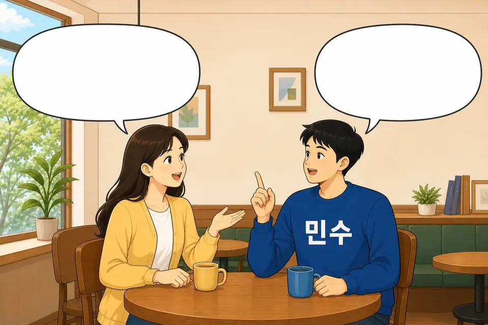

14과 문법 3 · A-아/어하다
내 느낌 · 다른 사람의 느낌
질문과 느낌을 고르면 말이 바뀌어요.
질문
질문을 고르세요.
지금의 말
말풍선을 보세요.
저는
더워요
철수는
더워해요

민수 씨는 어때요?
더워요
철수
더워
왜 말이 달라요?
민수 자신의 느낌은 “더워요”처럼 말해요. 민수가 본 철수의 느낌은 생각풍선 속 말에 “해요”를 붙여 “더워해요”라고 말해요.
형용사